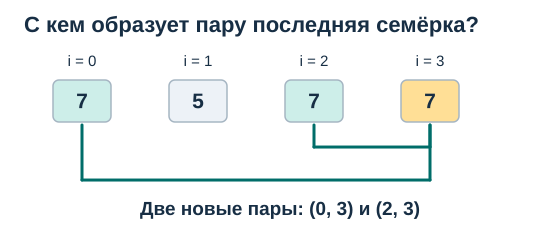

Частоты
Сколько раз встретилось значение
Частота — это число появлений конкретного значения. В последовательности [7, 5, 7, 7] частота семёрки равна 3, частота пятёрки равна 1. Такие количества можно накапливать за один проход. Хранить их удобно по самому значению.
| Какие значения бывают | Где хранить частоты |
|---|---|
Небольшие целые от 0 до m − 1 |
В массиве из m счётчиков. Для числа x увеличиваем count[x] |
| Произвольные целые, в том числе отрицательные | В словаре. Число служит ключом, частота — значением |
Сколько есть пар одинаковых чисел
При встрече новой семёрки можно составить по одной паре с каждой предыдущей семёркой. Хватит числа таких семёрок, хранить их индексы не требуется.
| Очередное число | Сколько таких было раньше | Всего пар после шага |
|---|---|---|
| 7 | 0 | 0 |
| 5 | 0 | 0 |
| 7 | 1 | 1 |
| 7 | 2 | 3 |

Собери пары одинаковых чисел
Добавь 7, 5, 7 и ещё раз 7. Перед последним нажатием попробуй назвать число новых пар. Порядок и состав последовательности можно менять.
Для подсчёта пар сначала прибавляем frequencies[value] к ответу, а затем увеличиваем счётчик. Поменяв эти действия местами, мы засчитали бы пару элемента с самим собой.
Если частоты лежат в массиве, индекс сразу задаёт смещение нужного счётчика в памяти. Для хеш-таблицы сначала вычисляют хеш ключа, затем ищут запись в выбранной группе. Если разные ключи попали в одну группу, сравниваем их с искомым ключом. При большом числе таких совпадений поиск может замедлиться.
В Python используем Counter, в C++ — std::unordered_map. Обращение к счётчику в хеш-таблице в среднем занимает O(1). Для n чисел время в среднем составляет O(n), память — O(u), где u — количество различных чисел. Если нужен порядок по ключам, в C++ подойдёт std::map. Для него весь проход занимает O(n log(u + 1)). В примере с четырьмя числами equal_pairs вернёт 3.
C++
#include <unordered_map>
#include <vector>
using std::unordered_map;
using std::vector;
using Int = long long;
using Numbers = vector<Int>;
Int equal_pairs(const Numbers& values) {
unordered_map<Int, Int> frequencies;
Int pair_count = 0;
for (Int value : values) {
pair_count += frequencies[value];
++frequencies[value];
}
return pair_count;
}
Тот же алгоритм на Python
from collections import Counter
def equal_pairs(values):
frequencies = Counter()
pair_count = 0
for value in values:
pair_count += frequencies[value]
frequencies[value] += 1
return pair_count
← Два указателя и скользящее окно · → Обходы клеточной карты